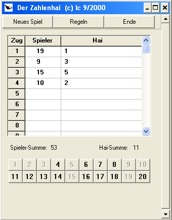
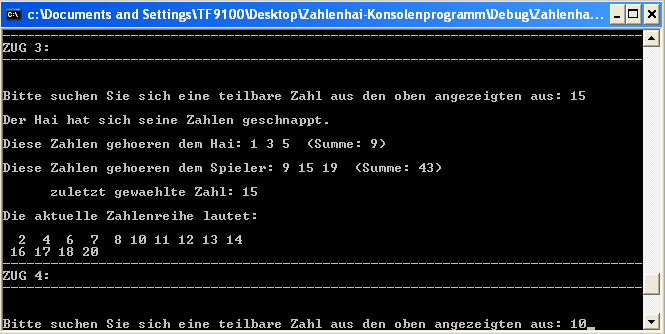
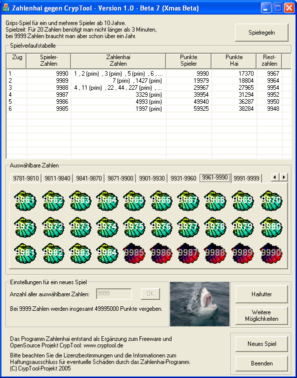
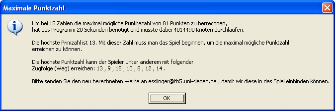
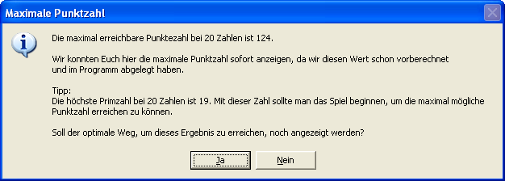
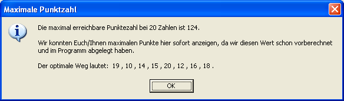
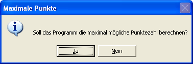
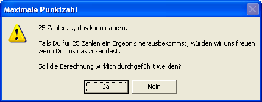
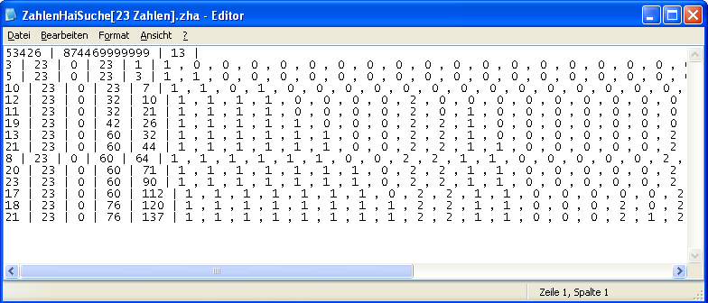

The idea for the Number Shark game comes from Mr. Lothar Carl, who created the original version of the game in Delphi. The Number Shark game is used to improve and to train the knowledge of factors and prime numbers in grades six to ten.
You can find the original game here:
http://www.learn-line.nrw.de/angebote/neuemedien/medio/mathe/coalgebr/zahlhai/hai01.htm
The following picture shows the original version. This program is freeware, but not Open Source.

Mr. Carl kindly allowed us to use his ideas and the name for a new version.
The new version of the Number Shark is freeware and open source.
1. Learning to program
Within the first year of the apprenticeship as an IT specialist, the program by Mr Carl was used as a sample to teach programming skills in C++ and to expand them by upgrading the program step by step.
At first the Number Shark procedure was implemented as a console program, later a graphical user interface was added.

After that, the program was continually expanded. The first add-on was to give the player the possibility to play with more than 50 numbers (this was the maximum in the original game). In order to do this we created a tab control on which the 30 buttons are placed. These buttons change their value and label depending on which tab you choose.
Now you can play with maximum 9999 numbers. This border is set in the source code because the buttons are not wide enough for bigger numbers and it would make no sense to play with a higher number because it will get too difficult to know all numbers and all factors.
The game dialog and all windows have a fixed size. We would like to make the size of the dialog variable, but unfortunately the resources editors in Visual C++ 6.0 and Visual C++ 7.1 (Visual Studio 2003) don't give us the possibility of the so called "docking" of graphical elements onto the dialog windows. The width of the columns in the game progress list can be changed in their width, so that the player can see all points that the Number Shark was awarded in every round. If the new content is broader then the current column, the width will not be adjusted automatically.

2. Maximum possible points
During the test phase, we asked ourselves how many points a player can score. To answer this question a function which calculated the maximum possible score was written.
We implemented an algorithm, which plays every possible move order and compares the achieved scores (also known as brute-force). If you press the "Start" button, which is in the "More Options" dialog you get:

The maximum possible points are already available for numbers from 1 to 22 and are saved in the program, so that they don’t need to be calculated again.

And the program can show you one optimal way to achieve this score. (i.e. in which way you should take the numbers)

Because this calculation takes a long time, the player is asked by the program before the calculation starts.
 
3. Stop and restart the calculation
We had to find a way to stop and restart the calculation because the PC may have to be used for other work or may have a power breakdown. To make sure this, intermediate results are saved in a document in short time intervals. The file "NumberSharkSearch[amount of numbers] is created in the same folder as the Number Shark executable and can be opened with a normal text editor.

When you start a new calculation the program first looks if an intermediate result for this number already exists. If yes, then the calculation starts at the same position where the former one stopped. Even without any knowledge of how this or the calculation works, you can, if you have a fast PC and a lot of time, calculate new values on your own.
For numbers > 22 we need your help: see Challenge. We have saved the maximum possible points, and one of the best ways to get these points for numbers < 22 in our program. If you play with numbers > 22 then we would be pleased if you could send us your results to esslinger@fb5.uni-siegen.de.
4. Keyboard control
To increase the usability in the program, we added a keyboard control. With this the player can move over the shells and the tabs with the arrow keys. In previous versions you could only use the left and right arrow key and the space bar to activate the buttons. Now you can play the game without using the mouse.
5. Tests
In additon to some colleagues from the branch and some apprentices, there were also users on the internet involved in game tests. Some of the suggestions that we received because of these tests were the tool tips, the keyboard control and the stop and restart of the calculation.
6. Visual appearance
To make the program look more like a game and less like an office application we needed to change the visual appearance of the game. The first step was to change the look of the buttons in the shell square. To realize this, we created a picture of a shell for every condition of a button (pressed, activated, has focus, deactivated) and placed it over the button. The buttons are transparent, to make the buttons look like the borders of the shell are the borders of the buttons.
A picture of a shark was added to the dialog in the next step and the tool tips were replaced by so called balloon tips (which is nothing else than round tool tips).
Other visual changes are the different colors on the game progress list and a LED display which shows you the scores and the end results.
The design of the buttons in the numbers stack, the LED displays and the coloured course of the game were realized with the help of source code examples from the users of the website http://www.codeproject.com.
After the game dialog was finished we realized that the game was to big for smaller pc screens and resolutions. To solve this problem we devided to create a second, smaller, game dialog. In this dialog you can only see 20 button shells at one time and the game progress list was shortened. The functionality in both dialoges is the same.
7. TO DOs - How the program can be improved.
Of course the program is not completed yet. Some ideas are:
You can find general information about the interface here, hints for the game are available here.
By legal reasons we explicitly have to point at the terms of licence and the information regarding non-liability.